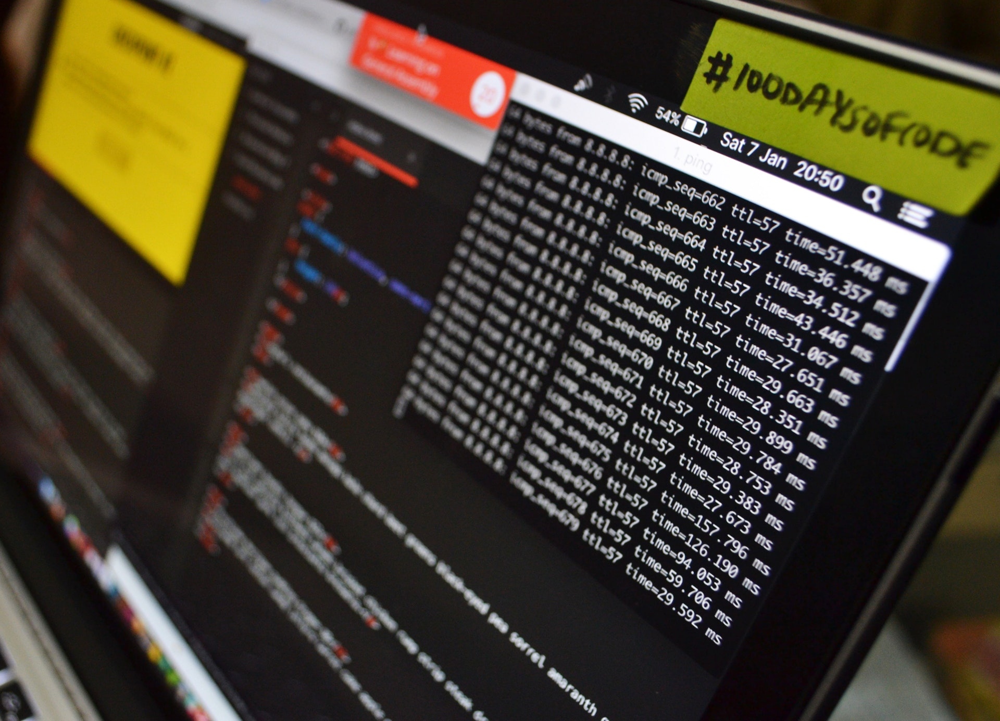

I have over 13 years experience in aftermarket automotive engineering, I'm dedicated to high quality operation and striving continuously for knowledge in a rapidly changing world.
After achieving the goal to be a professional ECU Calibrator set out when I was 16 and seeing the coming trends in the aftermarket automotive industry, I have gone back to school to move my career into the IT/Software Development industry where I can continue to grow and adapt to new technologies.
I am a recent graduate from LaunchCode's LC101 Full Stack Web Development program. This was an intensive 6 month boot camp that exposed us to Java, Python, HTML5, CSS3, Spring, Flask, Thymeleaf, Spring Boot, MySQL, Git and GitHub. We created projects from simple Python CLI programs to full stack Java applications. This curriculum exposed us to the concepts of programming languages and technologies, how to think like a programmer and design applications. In addition to teaching the technologies involved, it also focused on how to work as a team, write clean code, to plan ahead and utilize the many resources available to complete a task.